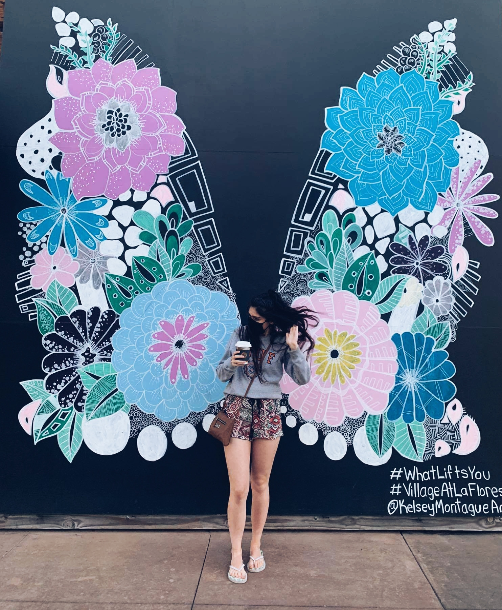
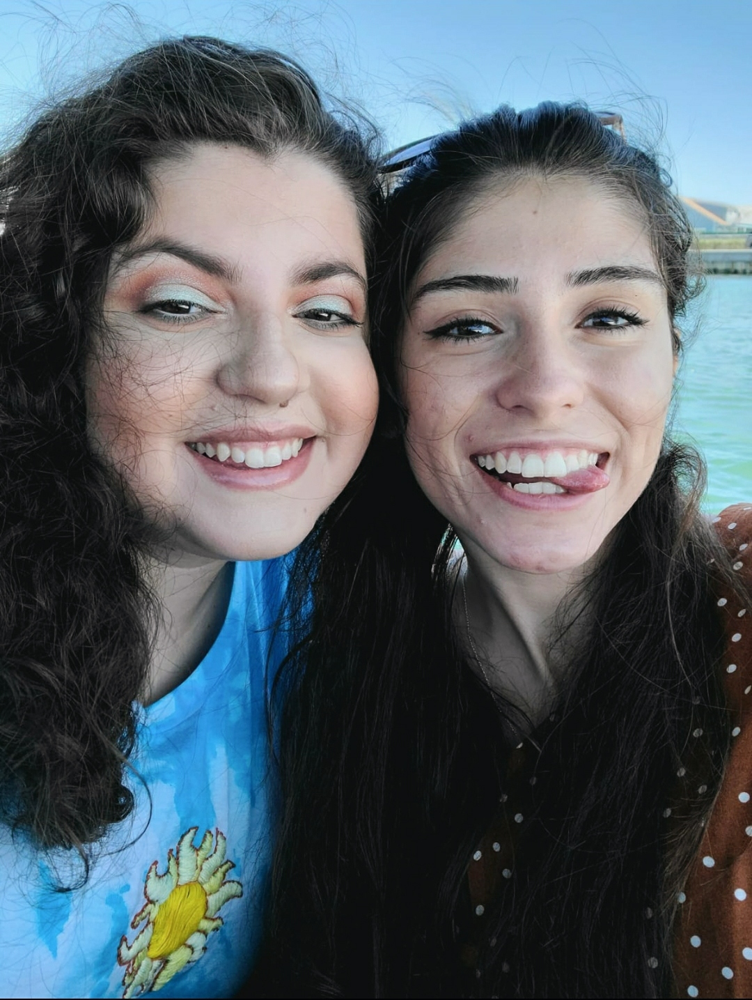
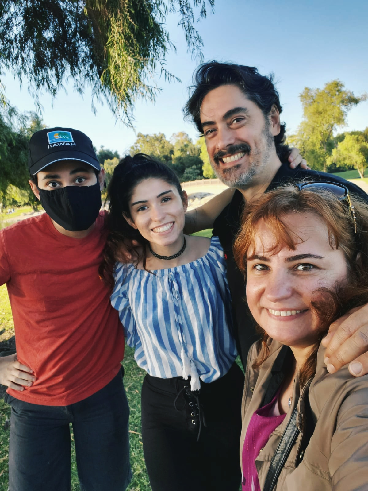
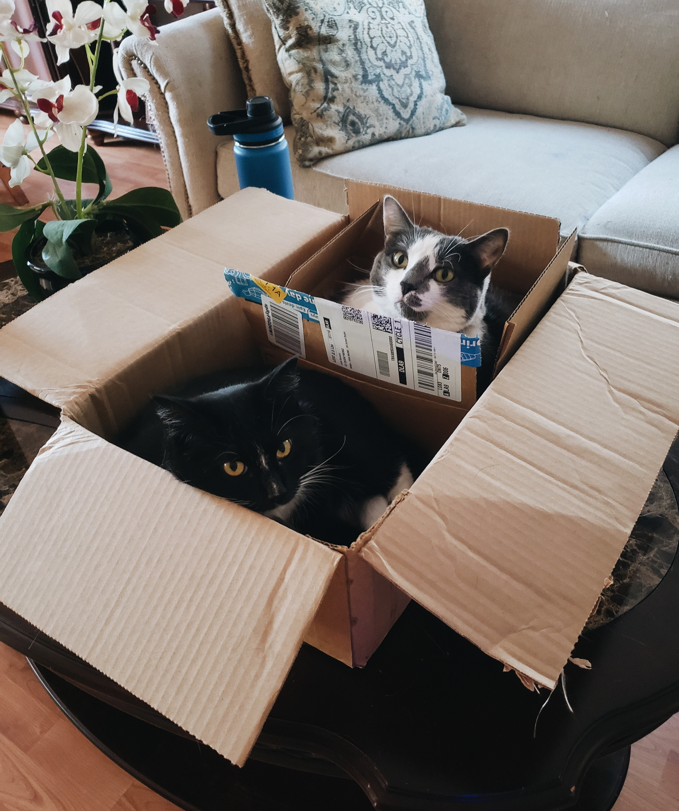

   
About Me
Where do I come from?
My name is Melanie Flor Danoviz. If you did not know, “flor” means flower in Spanish and I speak Spanish as well! I was born in Córdoba, Argentina on January 18th, 1999. In 2004, when I was five years old, my family decided to move to the capital of Argentina: Buenos Aires. A city full of life and chaos.
Although I lived in Argentina for almost 10 years, I still remember the street I had to cross with my mom when walking to school. There was not a traffic light nor a crossing guard, and the cars were always going at full speed. Every time we got close to that street, my mom would hold my hand tighter as we timed an opening to make a run to the other side of the street. Needless to say, my life was very active and fast-paced when I lived in Buenos Aires.
How do I define myself?
I guess art was a way for me to slow things down. I would spend hours drawing or making sculptures out of colored clay that my parents would give me. Art served as a way to destress and pass the time. I never gave art a second thought about becoming something more than just that.
Fast-forward to our new suburban life in Irvine, California, I am now striving to make art my means of living through a career in Graphic Design.
What do I like?
I did not always know what I wanted to do when I grew up or what I really liked to do. At first, I thought I was going to be a veterinarian because I liked animals, but when I realized that it meant seeing animals in pain, it broke my heart. Then, in high school, I took the AP education route and hoped that somewhere along the way, I would find my calling. Sadly, it never came. Instead, stress completely drowned upon me.
However, one day while eating lunch at a CPK restaurant, my parents asked me what I wanted to do with my future. When they saw my blank stare, they asked me what were the things that I liked to do. I started listing things like drawing, photography, editing, painting, etc. Then, after a few moments of silence, my mom and dad uttered the words “graphic design.” I immediately asked what that was, and since that moment, I have not looked back, nor ever doubted, what I wanted to be when I grow up: A Graphic Designer.
What am I going to do in the future?
There are so many things I want to try and do with graphic design. I have done movie posters, product packaging, pin designs, logos and company branding, book illustrations, and more. I think that as long as I receive a project that requires me to use my creativity and art skills then it will always make me happy and fulfilled!
My Skills

Places I Have Been To
| # | Years | Duration | City/Town | State/Country | Comments |
|---|---|---|---|---|---|
| 01 | 1999-2004 | 5 years | Córdoba | Argentina | Birthplace |
| 02 | 2004-2008 | 4 years | Buenos Aires | Argentina | Experienced the crazy city life |
| 03 | 2008-2011 | 3 years | Tampa | Florida/USA | First time ever in the USA |
| 04 | 2011-Now | 8 years | Irvine | California/USA | My home now |
| 05 | 2015 | 1 month | Misiones | Argentina | Visited my grandparents |
| 06 | 2015 | 1 day | Paraná | Brazil | Visited the Iguazu waterfalls |
| 07 | 2017 | 1 month | Lisbon & Madrid | Portugal & Spain | Visited my ex-bf with my parents |
| 08 | 2019 | 2 weeks | Seattle | Washington/USA | Visited my aunt for my birthday |
| 09 | 2019 | 3 days | Aitkin | Minnesota/USA | Visited a lake cabin for the first time |
| 10 | 2020 | 1 week | Flagstaff | Arizona/USA | Celebrated new years |
Design Philosophy
As a little girl, I was always very interested in illustration and adding as many details as possible. However, once I started my career education at CSUF, I noticed a slight appreciation towards minimalism and the phrase K.I.S.S. (Keep It Simple, Stupid). Sometimes less is more, and that is key when it comes to design and executing a message as efficiently as possible.
I am still trying to find my own design style, but I know that the more practice, the more I notice what kinds of fonts, colors, and shapes I usually tend to lean towards to. I really adore pastel colors, simple san serif fonts like Futura, and organic shapes. I love incorporating my illustration skills alongside my design skills using Illustrator and making flat, two-dimensional art that still has shadows and highlights but look more graphic than realistically rendered.
Since illustration is one of my strengths because I love to draw, paint, and color, I know that combining those skills with design will make me more successful. I once had a professor tell me the level of my illustrations looked like they were professional and part of the industry, even if they were simply pastel colored garden illustrations. That professor showed me the importance of combining your strengths to become a more well-rounded designer, so since that day, I have always tried to incorporate some sort of line drawing to my designs to enhance them.
I want to graduate college as a graphic designer who doesn’t just have one style, but is able to adapt to the necessities of her clients. Although I may lean towards a specific style when making art for myself or my college classes, I have had the opportunity to expand my design abilities with the different clients I have worked for during freelancing. I believe being well-rounded is what can help make a designer stand out from others.